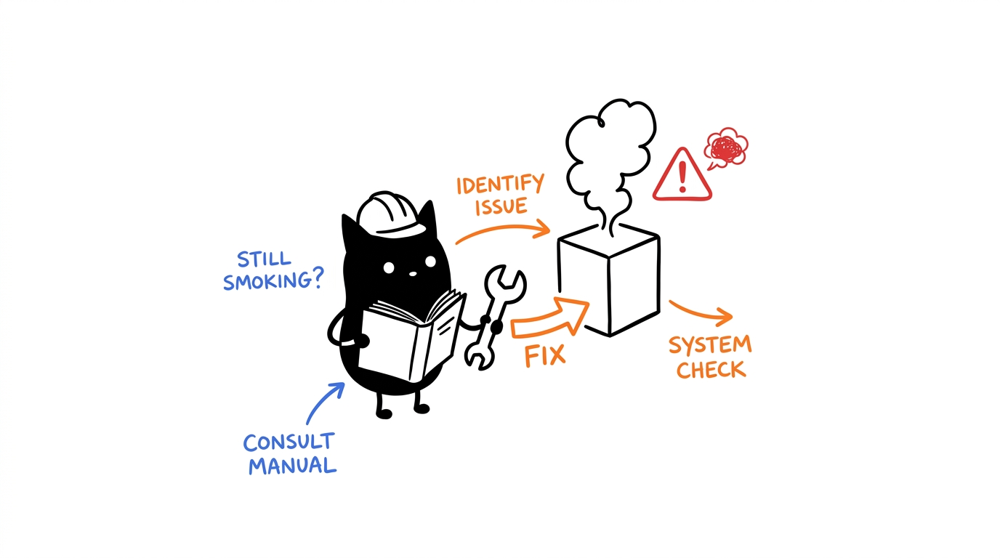

Diagnostik
Jalankan setup.sh doctor terlebih dahulu — diagnostik akan mengklasifikasikan penyebab kegagalan secara otomatis. Skenario di bawah ini mencakup seluruh permasalahan yang ditandai oleh doctor.

Anatomi laporan doctor
./setup.sh doctor
# 1. Runtime: Node 20+, Git, SQLite3 (WAL)
# 2. Kesehatan komponen: entrypoint hadir + stdio handshake + jumlah tool
# 3. Driver eksternal: Playwright / ADB / Blender (opsional, sesuai cakupan)
# 4. Kunci API: OpenRouter / GitHub / Google (opsional, fallback adaptif)Skenario kegagalan & perbaikan
Gejala: doctor menandai sel present: no. Penyebab: tahap kompilasi/build terlewat. Solusi: jalankan cd <dir> && npm install && npm run build, lalu jalankan ulang doctor. Cytosol tidak memerlukan build (src/server.js berjalan langsung).
Gejala: entrypoint ada tetapi protokol JSON-RPC gagal. Penyebab: versi mayor Node keliru (jalankan node --version, membutuhkan 20+), atau kegagalan native binding (node-pty pada ribosome memerlukan build tools: build-essential/python3). Instal ulang node_modules sel terkait dan lakukan build ulang.
Gejala: pemanggilan Google API oleh enzyme gagal; perkakas LLM mitosis melaporkan galat HTTP. Sesuai Desain: enzyme beralih secara anggun ke Wikipedia dengan status degraded (quota); mitosis beralih ke heuristik offline. Solusi: periksa kuota/kunci API, atau biarkan sistem beroperasi dalam mode terdegradasi — sistem dirancang untuk tidak pernah crash total karena kendala API keys.
Gejala: pengujian test:matrix gagal setelah pengeditan. Penyebab: hampir selalu akibat ketiadaan baris baru di akhir berkas (trailing newline) atau JSON yang tidak valid di config/inventory.json (pemeriksaan pre-commit end-of-file-fixer mewajibkan hal ini). Validasi struktur JSON, pastikan baris baru di akhir, lalu jalankan kembali.
Gejala: harness agen berjalan tetapi melaporkan nol (0) perkakas. Daftar Periksa: gunakan path absolut dalam konfigurasi klien (hindari simbol pintasan ~), pastikan biner node berada di PATH environment harness, pastikan nilai enabled: true untuk sel tersebut, lalu muat ulang (restart) harness agen (konfigurasi dimuat hanya saat inisialisasi awal).
setup.sh doctor serta gerbang verifikasi yang gagal.